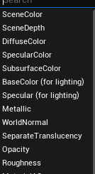
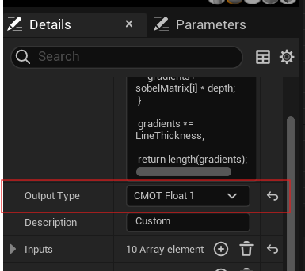
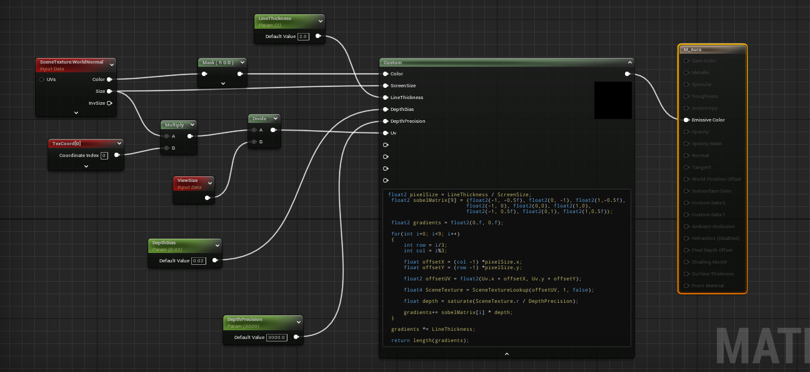
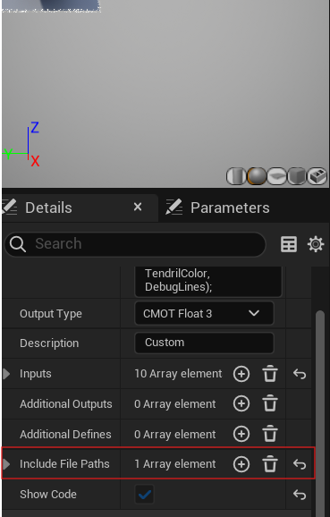

Introduction
While the material graph in UE5 is quite complete, sometimes using HLSL is a better alternative. For example, not only are for loops nowhere to be found in the material graph, it can also get tedious and messy very fast as the complexity of a shader increases.
In this post, I will showcase some ways to create shaders using HLSL and explain their pros and cons. Rest assured, none of these will require you to tackle the tedious task of building UE5 from source.
The custom node
The simplest and quickest way of creating shaders with HLSL is by using the custom node in the material graph.
Let’s create a very simple edge detection shader using the scene depth buffer. If you have never used a Sobel matrix for this, and you’d like to know how it works, I welcome you to watch this video, which explains it.
First, we start by writing the shader code. This can be done directly in the node’s HLSL input.
float2 pixelSize = LineThickness / ScreenSize;
float2 sobelMatrix[9] = {float2(-1, -0.5f), float2(0, -1), float2(1,-0.5f),
float2(-1, 0), float2(0,0), float2(1,0),
float2(-1, 0.5f), float2(0,1), float2(1,0.5f)};
float2 gradients = float2(0.f, 0.f);
for(int i=0; i<9; i++)
{
int row = i/3;
int col = i%3;
float offsetX = (col -1) *pixelSize.x;
float offsetY = (row -1) *pixelSize.y;
float2 offsetUV = float2(Uv.x + offsetX, Uv.y + offsetY);
float4 SceneTexture = SceneTextureLookup(offsetUV, 1, false);
float depth = saturate(SceneTexture.r / DepthPrecision);
gradients+= sobelMatrix[i] * depth;
}
gradients *= LineThickness;
return length(gradients);
Let’s look at the SceneTextureLookup(uv, texIndex,) function. With this function we sample the scene depth texture. The reason why in this case the index is 1 can be seen in the SceneTexture node, in the “Scene Texture Id” field.

As it can be seen the node now requires a few inputs – UV, EdgeThickness, ScreenSize, DepthBias and DepthPrecision. This can be added through the node’s details window:
We need to add another input, here called Color, to plug in a SceneTexture node. This value does not have to be referenced or used, as it is only needed so we can use the aforementioned function SceneTextureLookup().
Next, a thing to note is the return type of the snippet – float. By default, the custom node returns a float4. This can also be changed through the node’s details window.

Once everything is plugged in and the parameters are set, this is the result we get:


Using external shaders with the custom node
If you have experience with the custom node already, you might have noticed that there is an input for include paths.

These become really useful once you the shader code becomes too extensive and you would rather use a text editor to deal with it. Unfortunately, UE5 does not expect you to use HLSL code at all, thus using external HLSL files is not as straightforward as it could be.
Setup
The default path for shaders is the engine folder, which is inconvenient if you’d like to source control your shaders. To fix this, we want to add another shader directory by modifying the primary game module. This will require us to use some C++ and to have Visual Studio installed.
The first step is to create a “Shaders” folder in the root project folder.
Generate a solution file. This can be done through UE5 by right clicking the .uproject file and selecting “Generate Visual Studio Project Files”.
Open the project in Visual Studio.
All the files that will be need to be modified are under the filter “Source/ProjectName”. First we want to add “RenderCore” as a public dependency module. This can be done by editing the “ProjectName.Build.cs” file. If you do not add this, you will not be able to use AddShaderSourceDirectoryMapping() to add an additional shader directory.
PublicDependencyModuleNames.AddRange(new string[] { "Core", "RenderCore", "CoreUObject", "Engine", "InputCore"});
Now in “ProjectName.h” we create a game module class:
//ProjectName.h
#include "CoreMinimal.h"
class FProjectModule : public IModuleInterface
{
public:
virtual void StartupModule() override;
virtual void ShutdownModule() override;
};
In “ProjectName.cpp” we define the StartupModule() function, and inside we add the secondary directory to the Shaders folder we previously created.
FString ShaderDirectory = FPaths::Combine(FPaths::ProjectDir(), TEXT("Shaders"));
AddShaderSourceDirectoryMapping("/Project", ShaderDirectory);
Finally, we override the primary game module by using the macro IMPLEMENT_PRIMARY_GAME_MODULE(FProjectModule, ProjectName, "ModuleRulesName");
These is the final file:
// Copyright Epic Games, Inc. All Rights Reserved.
#include "Prototypes.h"
#include "Modules/ModuleManager.h"
#include "Interfaces/IPluginManager.h"
#include "Logging/LogMacros.h"
#include "Misc/Paths.h" // include this!
void FPrototypesModule::StartupModule()
{
FString ShaderDirectory = FPaths::Combine(FPaths::ProjectDir(), TEXT("Shaders"));
AddShaderSourceDirectoryMapping("/Project", ShaderDirectory);
}
void FPrototypesModule::ShutdownModule(){}
IMPLEMENT_PRIMARY_GAME_MODULE(FPrototypesModule, Prototypes, "Prototypes");
Once this is all done, you can press F5 to launch UE5.
Using it
To complicate the previous shader, let’s say we want to apply a noise texture along the edges of the objects.
Shaders in UE5 have to be created with the .ush or .usf extensions, so let’s create a new file in the “Shaders” folder we created and call it “EdgeDetection.ush”.
Here we can paste this code:
struct DetectEdges
{
float3 GetNormal(float2 uv)
{
float4 SceneTexture = SceneTextureLookup(uv, 8, false);
return SceneTexture.rgb;
}
float GetDepth(float2 uv, float depthPrecision)
{
float4 SceneTexture = SceneTextureLookup(uv, 1, false);
return saturate(SceneTexture.r / depthPrecision);
}
float3 GetColor(float2 uv)
{
float4 SceneTexture = SceneTextureLookup(uv, 0, false);
return SceneTexture.rgb;
}
float IsEdge(float2 uv, float3 color, float EdgeThickness, float2 screenSize, float depthBias, float depthPrecision)
{
float2 pixelSize = EdgeThickness / screenSize;
float2 sobelMatrix[9] = {float2(-1, -0.5f), float2(0, -1), float2(1,-0.5f),
float2(-1, 0), float2(0,0), float2(1,0),
float2(-1, 0.5f), float2(0,1), float2(1,0.5f)};
float2 gradients = float2(0.f, 0.f);
for(int i=0; i<9; i++)
{
int row = i/3;
int col = i%3;
float offsetX = (col -1) *pixelSize.x;
float offsetY = (row -1) *pixelSize.y;
float2 offsetUV = float2(uv.x + offsetX, uv.y + offsetY);
float depth = GetDepth(offsetUV, depthPrecision);
gradients+= sobelMatrix[i] * depth;
}
gradients *= EdgeThickness;
return length(gradients);
}
float3 DetectEdge(float2 uv, float3 color, float EdgeThickness, float2 screenSize, float depthBias, float depthPrecision, float3 noise, float noiseStrength, float3 tendrilColor, bool DebugLines)
{
float2 pixelSize = EdgeThickness / screenSize;
float edge = IsEdge(uv, color, EdgeThickness, screenSize, depthBias, depthPrecision);
float3 sceneColor = GetColor(uv);
edge = clamp(edge, 0.f, 1.f);
if(DebugLines)
{
return tendrilColor * edge > depthBias ? tendrilColor * edge : float3(0.f, 0.f, 0.f);
}
float3 result = sceneColor + tendrilColor * noise * noiseStrength * edge;
return edge > depthBias ? result : sceneColor;
}
};
The way the custom node works, is that it inserts your code in the generated shader in a function called MaterialFloat3 CustomExpression0(). You can check this by going to Window->ShaderCode->HLSL Code. For this reason, when you want to encapsulate something in a function, you must do so by using structs.
Now to finally to use this shader, you plug everything in, you add the include path to the right slot, in this case “/Project/EdgeDetection.ush” and call the function in the node like this:
DetectEdges detect;
return detect.DetectEdge(Uv, Color, LineThickness, ScreenSize, DepthBias, DepthPrecision, Noise, NoiseStrength, TendrilColor, DebugLines);
This is the final result!

Global Shaders and SceneViewExtension
Disclaimer: this method requires you to have some decent knowledge in C++ and graphics programming.
The previous ways are fine, but for more complex shaders that require multiple passes you might want to take a look into SceneViewExtensions. What this class does is it lets you “inject” custom render passes into UE5 without having to modify the engine’s source code. Meanwhile, Global Shaders, according to UE5’s documentation, are “shaders that are not created using the Material Editor. Instead, they are created using C++, operate on fixed geometry and do not need to interface with materials or a mesh.” For this reason, Global shaders are perfect for post processing effects. You could also use PostProcessingShaders, but those are still tied to the post processing pipeline, which means you’d need to modify the source code. If you want to read more on the type of shaders unreal uses, I recommend this blog post.
The game module
For starters, we need to create a custom game module, separate from the primary one. This is because shaders need to be compiled at a certain point, and by the time the primary game module is initialized – it is too late.
Assuming you already have your C++ project set up, you can do this by first going to ProjectName/Source, creating a new folder in that directory, and naming it as you’d name the new module. In this post, I will call it “AuraShaderModule”, as that is what I will be implementing.
Next you create 3 more folders in the new one: Public, Private and Shaders. After this, some files need to be created.
In the root module folder:
- AuraShaderModule.build.cs
In Public:
- AuraShaderModule.h
- CustomViewExtension.h
- OutlineShader.h
In Private:
- AuraShaderModule.cpp
- CustomViewExtension.cpp
- OutlineShader.cpp
Once that is done, we can start writing our module class.
//Public/AuraShaderModule.h
#pragma once
#include "CoreMinimal.h"
#include "Modules/ModuleManager.h"
class FAuraShaderModule: public IModuleInterface {
public:
virtual void StartupModule() override;
};
//Private/AuraShaderModule.cpp
#include "CustomModule.h"
void FAuraShaderModule::StartupModule() {
FString BaseDir = FPaths::Combine(FPaths::GameSourceDir(), TEXT("AuraShaderModule"));
FString ModuleShaderDir = FPaths::Combine(BaseDir, TEXT("Shaders"));
AddShaderSourceDirectoryMapping(TEXT("/AuraShaderModule"), ModuleShaderDir);
}
IMPLEMENT_MODULE(FAuraShaderModule, AuraShaderModule);
Here we use AddShaderSourceDirectoryMapping again to add a shader directory to the Shader folder we created inside the module folder. Then we use the macro IMPLEMENT_MODULE to implement it, adding the name of the class and also the build file, which we will write next.
// AuraShaderModule.build.cs
using UnrealBuildTool;
using System.Collections.Generic;
using System.IO;
public class AuraShaderModule : ModuleRules
{
public AuraShaderModule (ReadOnlyTargetRules Target) : base(Target)
{
PCHUsage = PCHUsageMode.UseExplicitOrSharedPCHs;
PublicDependencyModuleNames.AddRange(new string[] { "Core", "CoreUObject", "Engine", "Renderer", "RenderCore", "RHI" });
string EnginePath = Path.GetFullPath(Target.RelativeEnginePath);
PublicIncludePaths.Add(EnginePath + "Source/Runtime/Renderer/Private");
}
}
Here we define the public dependencies of the module as in previous examples. We also add Source/Runtime/Renderer/Private to the include paths, as we will be referencing some private classes.
Finally, we need to actually add the module to the project. For starters let’s add our custom module to the PublicDependencyModuleNames of our primary module. This can be found under Source/ProjectName/AuraShaderModule.Build.cs.
//AuraShaderModule.Build.cs
// Copyright Epic Games, Inc. All Rights Reserved.
using UnrealBuildTool;
public class Prototypes : ModuleRules
{
public Prototypes(ReadOnlyTargetRules Target) : base(Target)
{
PCHUsage = PCHUsageMode.UseExplicitOrSharedPCHs;
PublicDependencyModuleNames.AddRange(new string[] { "Core", "RenderCore", "CoreUObject", "Engine", "InputCore", "AuraShaderModule" });
PrivateDependencyModuleNames.AddRange(new string[] { });
PublicIncludePaths.AddRange(new string[] { "D:\\GITHUB\\Prototypes" });
}
}
Finally, we just have to add the module to the .uproject file. It is very important we set LoadingPhase as PostConfigInit so our shaders get compiled. So just open the .uproject file as a text file and make sure it looks something like this:
"Modules": [
{
"Name": "Prototypes",
"Type": "Runtime",
"LoadingPhase": "Default",
"AdditionalDependencies": [
"Engine"
]
},
{
"Name": "AuraShaderModule",
"Type": "Runtime",
"LoadingPhase": "PostConfigInit"
}
],
Once this is all done, you can right click the .uproject file and click on Generate Visual Studio Project Files. At this point you can run Unreal through visual studio to make sure everything runs properly.
Defining and implementing a Global Shader
Now let’s get to the fun part - defining a global shader. Let’s start with AuraShaderModule/Private/OutlineShader.h and define the input structure for our shaders. These are the same ones as we used in the custom node chapter.
BEGIN_SHADER_PARAMETER_STRUCT(FOutlineShaderParameters, )
SHADER_PARAMETER_SAMPLER(SamplerState, InputSampler)
SHADER_PARAMETER_RDG_TEXTURE(Texture2D, SceneColor)
SHADER_PARAMETER_RDG_TEXTURE(Texture2D, SceneDepth)
SHADER_PARAMETER_RDG_TEXTURE(Texture2D, Noise)
SHADER_PARAMETER(FLinearColor, LineColor)
SHADER_PARAMETER(float, EdgeThickness)
SHADER_PARAMETER(float, EdgeIntensity)
SHADER_PARAMETER(float, DepthBias)
SHADER_PARAMETER(float, Time)
SHADER_PARAMETER(float, MovementSpeed)
SHADER_PARAMETER(float, NoiseSize)
SHADER_PARAMETER(float, NoiseStrength)
SHADER_PARAMETER_STRUCT(FScreenPassTextureViewportParameters, ViewParams)
RENDER_TARGET_BINDING_SLOTS()
END_SHADER_PARAMETER_STRUCT()
These Unreal macros might seem scary, but once you read into it you’ll realize all it does is define a structure using macros.
Next let’s define the shader class.
//AuraShaderModule/Public/OutlineShader.h
class FOutlineShaderPS : public FGlobalShader {
public:
DECLARE_EXPORTED_SHADER_TYPE(FOutlineShaderPS, Global,);
using FParameters = FOutlineShaderParameters;
SHADER_USE_PARAMETER_STRUCT(FOutlineShaderPS, FGlobalShader);
};
First we declare the shader with DECLARE_EXPORTED_SHADER_TYPE and then we use an alias for FOutlineShaderParameters so the next macro, SHADER_USE_PARAMETER_STRUCT binds the struct to this shader.
Finally in the .cpp file, we implement the shader.
//AuraShaderModule/Private/OutlineShader.cpp
#include "OutlineShader.h"
IMPLEMENT_SHADER_TYPE(, FAuraShaderPS, TEXT("/AuraShaderModule/Aura.usf"), TEXT("AuraMainPS"), SF_Pixel);
Also, don’t forget do add the outline shader we wrote before to the module’s shader directory. It should generally look the same, with some exceptions:
- We are using a sampler instead of using
SceneTextureLookup - We need to add some ue5 shader includes
- We need to define
SCREEN_PASS_TEXTURE_VIEWPORT(ViewParams)so we can get variables like the screen’s size. - We need to define the inputs.
- We need a new function to calculate the UV
float2 PosToUV(float2 Pos)
In the end it should look something like this
//AuraShaderModule/Shaders/Aura.usf
#include "/Engine/Public/Platform.ush"
#include "/Engine/Private/Common.ush"
#include "/Engine/Private/ScreenPass.ush"
SCREEN_PASS_TEXTURE_VIEWPORT(ViewParams)
SamplerState InputSampler;
Texture2D SceneColor;
Texture2D SceneDepth;
Texture2D Noise;
float4 LineColor;
float EdgeThickness;
float EdgeIntensity;
float DepthBias;
float NoiseSize;
float NoiseStrength;
float Time;
float MovementSpeed;
uint DebugLines;
float2 PosToUV(float2 Pos);
float Edge(float2 uv);
float2 GetMovementDirection(float2 uv);
float4 AuraMainPS(float4 SvPosition : SV_POSITION) : SV_Target0
{
// Convert screen position to UV coordinates for sampling
float2 ScreenUV = PosToUV(SvPosition).xy;
// Calculate edge intensity
float edge = saturate(Edge(ScreenUV));
// Sample the base scene color at ScreenUV
float4 sceneColor = SceneColor.SampleLevel(InputSampler, ScreenUV, 0);
// Calculate animated noise offset for dynamic effect
float2 noiseMovementVelocity = GetMovementDirection(ScreenUV) * MovementSpeed * Time;
float noise = Noise.SampleLevel(InputSampler, ScreenUV * NoiseSize + noiseMovementVelocity, 0).r;
// Debug mode to visualize edges
if (DebugLines)
return edge >= DepthBias ? edge * LineColor : float4(0.f, 0.f, 0.f, 1.f);
// Calculate edge color with noise modulation
float3 edgeColor = LineColor.rgb * noise * NoiseStrength * edge;
// Final aura result combining edge color
float3 auraResult = edge >= DepthBias ? edgeColor + sceneColor.rgb : sceneColor.rgb;
return float4(auraResult, 1.f);
}
float2 PosToUV(float2 Pos)
{
float2 ViewportUV = ((Pos - ViewParams_ViewportMin.xy) * ViewParams_ViewportSizeInverse.xy);
return ViewportUV * ViewParams_UVViewportSize + ViewParams_UVViewportMin;
}
// Set direction based on position in the screen space
float2 GetMovementDirection(float2 uv)
{
return float2(uv.x < 0.5f ? 1.f : -1.f, uv.y < 0.5f ? 1.f : -1.f);
}
float Edge(float2 uv)
{
// Set pixel size for edge detection based on viewport size and edge thickness
float2 pixelSize = EdgeThickness / ViewParams_ViewportSize;
// Define 3x3 matrix for Sobel edge detection
float2 sobelMatrix[9] =
{
float2(-1, -0.5f), float2(0, -1), float2(1, -0.5f),
float2(-1, 0), float2(0, 0), float2(1, 0),
float2(-1, 0.5f), float2(0, 1), float2(1, 0.5f)
};
// Calculate depth gradients using the Sobel matrix for edge intensity
float2 gradients = float2(0.f, 0.f);
for (int i = 0; i < 9; i++)
{
// Calculate offset UV once per pixel
float2 offsetUV = uv + float2((i % 3 - 1) * pixelSize.x, (i / 3 - 1) * pixelSize.y);
// Depth sample per matrix entry
gradients += sobelMatrix[i] * SceneDepth.SampleLevel(InputSampler, offsetUV, 0).r;
}
// Apply edge intensity and return the length of the gradient vector for edge strength
return length(gradients * EdgeIntensity);
}
Once you have all of this, launch UE5 from visual studio to make sure everything compiles.
Scene view extensions
As I mentioned, the scene view extension class is what’s responsible for injecting the render pass in the engine. If you look at this base class, you can see all the functions you can use for this
//SceneViewExtension.h
<...>
/**
* Called on game thread when creating the view.
*/
virtual void SetupView(FSceneViewFamily& InViewFamily, FSceneView& InView) = 0;
/**
* Called when creating the viewpoint, before culling, in case an external tracking device needs to modify the base location of the view
*/
virtual void SetupViewPoint(APlayerController* Player, FMinimalViewInfo& InViewInfo) {}
/**
* Called when creating the view, in case non-stereo devices need to update projection matrix.
*/
virtual void SetupViewProjectionMatrix(FSceneViewProjectionData& InOutProjectionData) {}
/**
* Called on game thread when view family is about to be rendered.
*/
virtual void BeginRenderViewFamily(FSceneViewFamily& InViewFamily) = 0;
/**
* Called on render thread at the start of rendering.
*/
virtual void PreRenderViewFamily_RenderThread(FRDGBuilder& GraphBuilder, FSceneViewFamily& InViewFamily) {}
/**
* Called on render thread at the start of rendering, for each view, after PreRenderViewFamily_RenderThread call.
*/
virtual void PreRenderView_RenderThread(FRDGBuilder& GraphBuilder, FSceneView& InView) {}
/**
* Called on render thread prior to initializing views.
*/
virtual void PreInitViews_RenderThread(FRDGBuilder& GraphBuilder) {}
/**
* Called on render thread right before Base Pass rendering. bDepthBufferIsPopulated is true if anything has been rendered to the depth buffer. This does not need to be a full depth prepass.
*/
virtual void PreRenderBasePass_RenderThread(FRDGBuilder& GraphBuilder, bool bDepthBufferIsPopulated) {}
/**
* Called right after Base Pass rendering finished when using the deferred renderer.
*/
virtual void PostRenderBasePassDeferred_RenderThread(FRDGBuilder& GraphBuilder, FSceneView& InView, const FRenderTargetBindingSlots& RenderTargets, TRDGUniformBufferRef<FSceneTextureUniformParameters> SceneTextures) {}
/**
* Called right after Base Pass rendering finished when using the mobile renderer.
*/
virtual void PostRenderBasePassMobile_RenderThread(FRHICommandList& RHICmdList, FSceneView& InView) {}
<...>
In this blog post I will only touch on virtual void PostRenderBasePass_RenderThread(FRHICommandListImmediate& RHICmdList, FSceneView& InView), but I highly encourage you to look into this class to check its full capabilities yourself.
Let’s expand on this class to make our own render pass in CustomViewExtension.h
//AuraShaderModule/Public/CustomViewExtension.h
#pragma once
#include "SceneViewExtension.h"
class CUSTOMMODULE_API FCustomViewExtension : public FSceneViewExtensionBase {
public:
FCustomViewExtension(const FAutoRegister& AutoRegister, FLinearColor edgeColor, float depthBias, float edgeThickness, float edgeIntensity, float noiseSize, float noiseStrength, float movementSpeed, UTexture2D* texture);
//~ Begin FSceneViewExtensionBase Interface
virtual void SetupViewFamily(FSceneViewFamily& InViewFamily) override {};
virtual void SetupView(FSceneViewFamily& InViewFamily, FSceneView& InView) override {};
virtual void BeginRenderViewFamily(FSceneViewFamily& InViewFamily) override {};
virtual void PreRenderViewFamily_RenderThread(FRHICommandListImmediate& RHICmdList, FSceneViewFamily& InViewFamily) override {};
virtual void PreRenderView_RenderThread(FRHICommandListImmediate& RHICmdList, FSceneView& InView) override {};
virtual void PostRenderBasePass_RenderThread(FRHICommandListImmediate& RHICmdList, FSceneView& InView) override {};
virtual void PrePostProcessPass_RenderThread(FRDGBuilder& GraphBuilder, const FSceneView& View, const FPostProcessingInputs& Inputs) override;
//~ End FSceneViewExtensionBase Interface
void SetEdgeColor(const FLinearColor& color);
void SetDepthBias(const float& bias);
void SetEdgeThickness(const float& thickness);
void SetEdgeIntensity(const float& intensity);
void SetSceneDepthSize(const float& size);
void SetNoiseSize(const float& size);
void SetNoiseStrength(const float& strength);
void SetTime(const float& time);
void SetMovementSpeed(const float& speed);
void SetDebugLines(const bool& debug);
void SetNoiseTexture(UTexture2D* tex);
private:
FLinearColor EdgeColor;
float DepthBias;
float EdgeThickness;
float EdgeIntensity;
float NoiseSize;
float Time = 0;
float MovementSpeed;
float NoiseStrength;
uint32_t DebugLines;
UTexture2D* NoiseTex;
};
All we need to do is override the PostRenderBasePass_RenderThread function and declare all our variables, as well as the setters.
Next, in the .cpp file is were we implement the logic, specifically in PostRenderBasePass_RenderThread.
void FMyViewExtension::PrePostProcessPass_RenderThread(FRDGBuilder& GraphBuilder, const FSceneView& View, const FPostProcessingInputs& Inputs) {
if ((*Inputs.SceneTextures)->CustomDepthTexture->Desc.Format != PF_DepthStencil) return;
checkSlow(View.bIsViewInfo);
//We check if the texture is valid
if (NoiseTex == nullptr)
return;
const FIntRect Viewport = static_cast<const FViewInfo&>(View).ViewRect;
FScreenPassTexture SceneColor((*Inputs.SceneTextures)->SceneColorTexture, Viewport);
FGlobalShaderMap* GlobalShaderMap = GetGlobalShaderMap(GMaxRHIFeatureLevel);
RDG_EVENT_SCOPE(GraphBuilder, "Aura Render Pass");
// Viewport parameters
const FScreenPassTextureViewport SceneColorTextureViewport(SceneColor);
const FScreenPassTextureViewportParameters SceneTextureViewportParams = GetTextureViewportParameters(SceneColorTextureViewport);
// Render targets
FScreenPassRenderTarget SceneColorCopyRenderTarget;
SceneColorCopyRenderTarget.Texture = GraphBuilder.CreateTexture((*Inputs.SceneTextures)->SceneColorTexture->Desc, TEXT("Scene Color Copy"));
FScreenPassRenderTarget UVMaskRenderTarget;
UVMaskRenderTarget.Texture = GraphBuilder.CreateTexture((*Inputs.SceneTextures)->SceneColorTexture->Desc, TEXT("UV Mask"));
//Getting the noise texture
FTextureResource* TextureResource = NoiseTex->GetResource();
FTextureRHIRef TextureRHI = TextureResource->TextureRHI;
auto noiseTexture = GraphBuilder.RegisterExternalTexture(CreateRenderTarget(TextureRHI, TEXT("NoiseTexture")));
// Shader setup
TShaderMapRef<FAuraShaderPS> AuraPixelShader(GlobalShaderMap);
FAuraShaderPS::FParameters* AuraParameters = GraphBuilder.AllocParameters<FAuraShaderPS::FParameters>();
AuraParameters->SceneColor = (*Inputs.SceneTextures)->SceneColorTexture;
AuraParameters->SceneDepth = (*Inputs.SceneTextures)->SceneDepthTexture;
AuraParameters->InputSampler = TStaticSamplerState<SF_Point, AM_Wrap, AM_Wrap, AM_Wrap>::GetRHI();
AuraParameters->LineColor = EdgeColor;
AuraParameters->DepthBias = DepthBias;
AuraParameters->EdgeThickness = EdgeThickness;
AuraParameters->EdgeIntensity = EdgeIntensity;
AuraParameters->NoiseSize = NoiseSize;
AuraParameters->NoiseStrength = NoiseStrength;
AuraParameters->MovementSpeed = MovementSpeed;
AuraParameters->Time = Time;
AuraParameters->DebugLines = DebugLines;
AuraParameters->Noise = noiseTexture;
AuraParameters->ViewParams = SceneTextureViewportParams;
AuraParameters->RenderTargets[0] = FRenderTargetBinding(SceneColor.Texture, ERenderTargetLoadAction::ELoad);
FPixelShaderUtils::AddFullscreenPass(
GraphBuilder,
GlobalShaderMap,
FRDGEventName(TEXT("Aura")),
AuraPixelShader,
AuraParameters,
Viewport);
}
This is a lot to take in, but all we are doing is
- Checking validity of resources
- Getting the viewport parameters
- Getting scene textures and render targets
- Setting the values into an instance of an input struct that we created earlier
- Adding the pass
A thing worth noting is GetTextureViewportParameters(SceneColorTextureViewport). This is a function I got from a blog post I learned all of this from. I highly recommend giving it a look as well. This is the function.
FScreenPassTextureViewportParameters GetTextureViewportParameters(const FScreenPassTextureViewport& InViewport) {
const FVector2f Extent(InViewport.Extent);
const FVector2f ViewportMin(InViewport.Rect.Min.X, InViewport.Rect.Min.Y);
const FVector2f ViewportMax(InViewport.Rect.Max.X, InViewport.Rect.Max.Y);
const FVector2f ViewportSize = ViewportMax - ViewportMin;
FScreenPassTextureViewportParameters Parameters;
if (!InViewport.IsEmpty()) {
Parameters.Extent = FVector2f(Extent);
Parameters.ExtentInverse = FVector2f(1.0f / Extent.X, 1.0f / Extent.Y);
Parameters.ScreenPosToViewportScale = FVector2f(0.5f, -0.5f) * ViewportSize;
Parameters.ScreenPosToViewportBias = (0.5f * ViewportSize) + ViewportMin;
Parameters.ViewportMin = InViewport.Rect.Min;
Parameters.ViewportMax = InViewport.Rect.Max;
Parameters.ViewportSize = ViewportSize;
Parameters.ViewportSizeInverse = FVector2f(1.0f / Parameters.ViewportSize.X, 1.0f / Parameters.ViewportSize.Y);
Parameters.UVViewportMin = ViewportMin * Parameters.ExtentInverse;
Parameters.UVViewportMax = ViewportMax * Parameters.ExtentInverse;
Parameters.UVViewportSize = Parameters.UVViewportMax - Parameters.UVViewportMin;
Parameters.UVViewportSizeInverse = FVector2f(1.0f / Parameters.UVViewportSize.X, 1.0f / Parameters.UVViewportSize.Y);
Parameters.UVViewportBilinearMin = Parameters.UVViewportMin + 0.5f * Parameters.ExtentInverse;
Parameters.UVViewportBilinearMax = Parameters.UVViewportMax - 0.5f * Parameters.ExtentInverse;
}
return Parameters;
}
Finally we are done setting this up. Now we can move to the very last step.
Implementing the scene view extension
This is the last and most simple step here. All we have to do to start up our render pass is call the SceneViewExtension constructor somewhere in our game. I personally like having it in a blueprint, on BeginPlay(). I recommend you do it as well, to avoid any annoying crashes caused by errors.
void ACustomPass::BeginPlay()
{
Super::BeginPlay();
MyViewExtension = FSceneViewExtensions::NewExtension<FMyViewExtension>(EdgeColor, DepthBias, EdgeThickness, EdgeIntensity, NoiseSize, NoiseStrength, NoiseMovementSpeed, NoiseTex);
}
Lastly, you can also set all the variables in the tick function, so you can modify them in the editor as well.
Now compile and press play!

(For extra effect I also added a very simple fog using the depth stencil ;) )
Conclusion
Wile definitely not the only ones existing, these are the ways of using external shaders and HLSL I have found during my research. A lot of these are heavily based on other blog posts that I have found, so I will list them here.